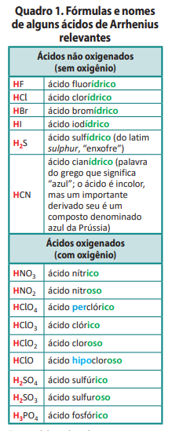
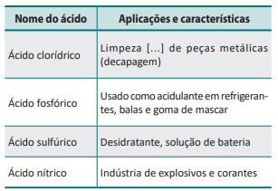

Ácidos
O químico sueco Svante August Arrhenius (1859‑1927) realizou experimentos sobre diversos temas, entre eles a condutividade elétrica de soluções. Formulou a hipótese de que soluções eletrolíticas contêm íons dissolvidos, provenientes da ionização ou dissociação iônica da substância dissolvida em água. Esses íons, dotados de mobilidade, são responsáveis pela condutividade elétrica da solução. Fundamentado em suas investigações, propôs que ácido é um composto que, dissolvido em água, origina H+ como único cátion. Assim, para Arrhenius, as propriedades coletivas dos ácidos se devem ao íon H+ liberado quando se dissolvem em água, já que o ânion varia de ácido para ácido. Consideremos a ionização em água do HCl (em meio aquoso, esse composto é um ácido deno‑ minado clorídrico, ou muriático):
Como já comentamos, essa representação é simplificada. O íon H+ (aq) não tem existência individual, ligando‑se a uma molécula de água e constituindo H3O+ (aq), denominado oxônio. Então, podemos pensar na definição de Arrhenius assim: ácido é um composto que, dissolvido em água, origina H3O+ como único cátion. No caso da ionização do HCl em água, temos:
De modo análogo, diversas outras substâncias se ionizam em água liberando H⁺ e, consequentemente, produzindo H₃O⁺ (aq). Outros exemplos de ácidos e suas equações de ionização são:
É comum utilizar a expressão hidrogênios ionizáveis para designar os átomos de hidrogênio com a potencialidade de originarem cátion H₃O⁺ quando ácidos são dissolvidos em água. A ionização de um ácido com mais de um hidrogênio ionizável ocorre em etapas, levando à formação de mais de um tipo de ânion na solução ácida. No caso do ácido sulfúrico, por exemplo, a ionização primeiro forma o ânion HSO₄⁻, que, ao se ionizar, gera o ânion SO₄²⁻:O Quadro 1 relaciona fórmulas moleculares e nomes de alguns ácidos de Arrhenius, isto é, compostos que são classificados como ácidos de acordo com a definição feita por ele. Analisando o quadro, note que ácidos não oxigenados têm nomes que terminam em ídrico, e ácidos oxigenados têm nomes terminados em ico ou oso. Alguns contêm os prefixos per ou hipo. Esses nomes remontam a uma época anterior ao conhecimento das fórmulas com exatidão e são empregados até hoje. Representam esforços de químicos que elaboraram uma nomenclatura para possibilitar a denominação desses compostos sem haver ambiguidade. Existem diversos outros ácidos, além dos mostrados no Quadro 1, e é importante que você se habitue a pesquisar nomes e fórmulas sempre que precisar, inclusive durante a realização de atividades.
Os ácidos, em geral, têm muitas aplicações importantes em indústrias e laboratórios. Eles devem ser manipulados apenas por profissionais treinados, utilizando equipamentos de proteção individual e seguindo rigorosamente normas de segurança.
Todos os ácidos são tóxicos aos seres humanos a partir de concentrações específicas. No entanto, alguns deles, em concentrações baixas, são encontra‑ dos em alimentos como iogurtes, molhos de tomate, vinagres e certas frutas, e podem ser ingeridos por pessoas saudáveis. Ao degustá ‑los, o sabor azedo é uma percepção sensorial da presença de íons H₃O⁺ (aq) na língua

Exercícios
6. Explique por que as substâncias de fórmula HCl e HNO3 são consideradas ácidos de Arrhenius. Utilize equações químicas adequadas como parte de sua resposta.
7. (PUC‑MG) A tabela apresenta algumas características e aplicações de alguns ácidos.

As fórmulas dos ácidos da tabela são, respectivamente:
- a. HCl, H₃PO₄, H₂SO₄, HNO₃.
- b. HClO, H₃PO₃, H₂SO₄, HNO₂.
- c. HCl, H₃PO₃, H₂SO₄, HNO₃.
- d. HClO₂, H₄P₂O₇, H₂SO₃, HNO₂.
- e. HClO, H₃PO₄, H₂SO₃, HNO₃.
8. (Univali‑SC) A chuva ácida é um fenômeno químico
resultante do contato entre o vapor de água existente
no ar, o dióxido de enxofre e os óxidos de nitrogênio.
O enxofre é liberado, principalmente, por indústrias de
veículos e usinas termoelétricas movidas a carvão e a óleo;
os óxidos de nitrogênio, por automóveis e fertilizantes.
Ambos reagem com o vapor de água, originando, res‑
pectivamente, os ácidos sulfuroso, sulfídrico e sulfúrico,
e o ácido nítrico. Esses elementos se precipitam, então,
na forma de chuva, neve, orvalho ou geada, na chamada
chuva ácida.
Dentre os efeitos da chuva ácida, estão a corrosão de
equipamentos e a degradação das plantas, solos e lagos.
O contato com os ácidos é prejudicial, podendo causar,
por exemplo, doenças respiratórias.
As fórmulas dos ácidos citados no texto, respectivamente,
são:
- a. H₂S, H₂SO₄, H₂SO₃, HNO₃.
- b. H₂SO₃, H₂SO₄, H₂S, HNO₂.
- c. HSO₄, HS, H₂SO₄, HNO₃.
- d. HNO₃, H₂SO₄, H₂S, H₂SO₃.
- e. H₂SO₃, H₂S, H₂SO₄, HNO₃.
9. (Unicamp‑SP) Água pura é um mau condutor de corrente
elétrica.
O ácido sulfúrico puro (H2SO4) também é mau
condutor.
Explique o fato de uma solução diluída de ácido
sulfúrico, em água, ser boa condutora de corrente elétrica.